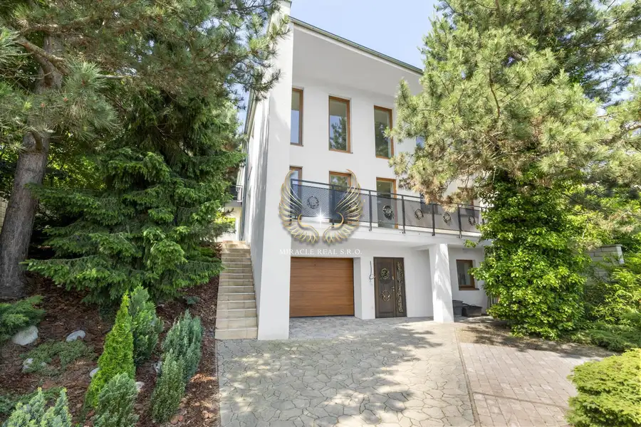
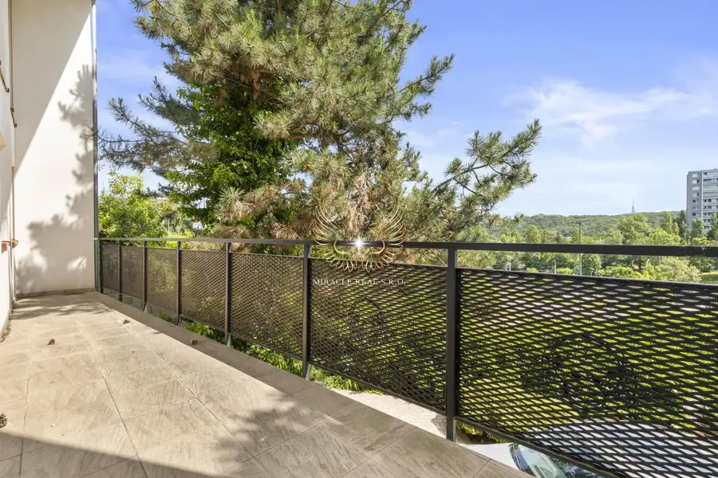
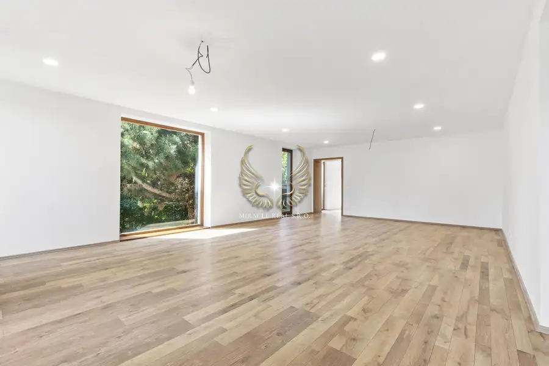
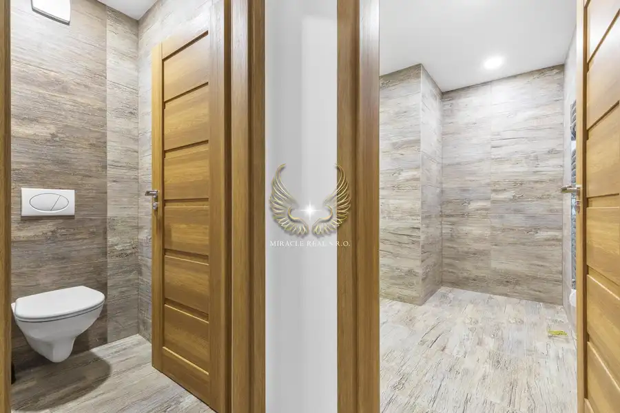
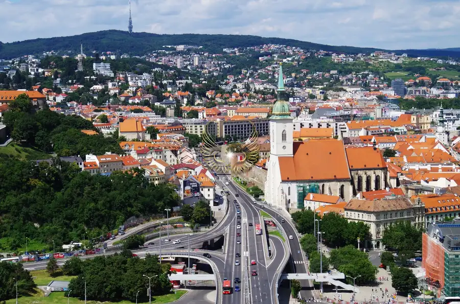
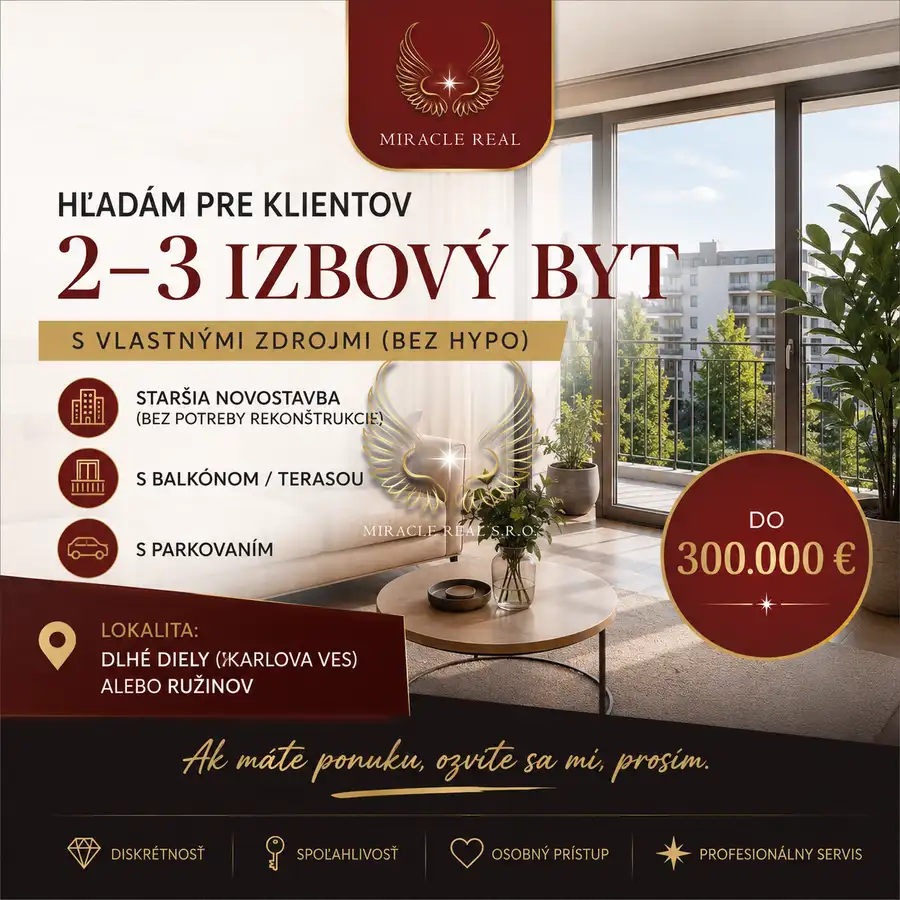

TOP!!! novozrekonštruovaný 2GENERAČNÝ rod. dom pod lesom
Karlova Ves, Bratislava




- Plocha315 m²
- StavKompletná rekonštrukcia
- VlastníctvoOsobné
O nehnuteľnosti
🌟 Bývanie pod lesom s nekonečnými možnosťami – Luxusný rodinný dom v Karlovej Vsi - KútikyHľadáte miesto, kde sa ranná káva podáva s výhľadom na zeleň, no do centra mesta to máte len pár minút? Predstavujeme vám výnimočnú nehnuteľnosť v obľúbenej časti Bratislava – Karlova Ves (Kútiky), ktorá v sebe spája komfort moderného bývania a pokojnú atmosféru prírody.Tento kompletne novozrekonštruovaný 3-podlažný rodinný dom čaká na svojho prvého majiteľa. V dome po rekonštrukcii ešte nikto nebýval – všetko vonia novotou a je pripravené na vaše nasťahovanie.🏡 Čím vás tento dom očarí?Priestor a svetlo: Úžitková plocha až 315 m² rozložená na troch podlažiach ponúka veľkorysý priestor pre každého člena rodiny.Flexibilita, ktorú oceníte: Dom je navrhnutý s víziou. Vďaka príprave na osobný výťah a samostatným kúpeľniam na každom podlaží ho môžete využiť ako:Luxusné viacgeneračné bývanie.Kombináciu bývania a podnikania (ambulancia, ateliér, kancelárie).Investíciu na prenájom samostatných bytových jednotiek.Možnosť stavebnej úpravy 2 samostatné bytové jednotky v prípade záujmu.Technologický štandard: Kvalitná pálená tehla, zateplenie, podlahové kúrenie v celom dome, drevené eurookná s trojsklom a nová izolácia strechy zaručujú nízke náklady a maximálny komfort.Záhrada pod lesom: Pozemok o výmere 638 m² susedí priamo s lesom, čo vám zabezpečí súkromie a čistý vzduch. Je tu dostatok miesta aj pre bazén či záhradný altánok.🚗 Parkovanie a dostupnosťZabudnite na problémy s parkovaním. K dispozícii máte priestrannú garáž (29 m²) s elektrickou bránou a ďalšie 4 parkovacie miesta priamo na pozemku. Lokalita vyniká skvelou občianskou vybavenosťou v pešej dostupnosti a bleskovým napojením na diaľničný obchvat.📈 Podnikateľský potenciálDom sa nachádza na tichej ulici, no je viditeľný z hlavnej cesty, čo z neho robí ideálne miesto pre sídlo firmy s možnosťou umiestnenia viditeľnej reklamy.Technické parametre v skratke:Úžitková plocha: 315 m²Pozemok: 638 m²Počet izieb: 6,5 (možnosť úpravy na 7izieb)Stav: Kompletná nová rekonštrukciaVšetky inžinierske siete (voda, elektrika, plyn, kanalizácia, internet)Link na krátke video: https://youtube.com/shorts/TBw5V602cf0?si=3Tp2cYrEv5ymO4y0Cena nehnuteľnosti je 950.000Eur (vrátane odkúpeného pozemku s príjazdom k domu). V prípade vážneho záujmu je ešte možná dohoda na cene.(vrátane kompletného právneho servisu a hypotekárneho poradenstva)Nečakajte, kým vás niekto predbehne. Tento dom je investíciou do kvality života a vašej budúcnosti.Dohodnite si obhliadku ešte dnes!📞 Kontakt: Mgr. Klaudia Villemová, 0948 773 343✉️ E-mail: villemovak@gmail.com🌐 Viac info na: www.miraclereal.skMiracle Real – Vstúpte s nami do zázračného sveta realít.
Parametre
- Druh
- Rodinný dom
- Dátum zverejnenia
- 30. 09. 2026
- Plocha pozemku
- 638 m²
- Počet garáží
- 1
- Stav nehnuteľnosti
- Kompletná rekonštrukcia
- Telekomunikácie
- Internet
- Typ
- Predaj
- Vlastníctvo
- Osobné
- Vybavenie
- Balkón, Terasa, Garáž, Špajza
- Zastavaná plocha
- 173 m²
- Úžitková plocha
- 315 m²
Kde to je


Mohlo by Vás zaujímať
 BytNové
300 000 €Hľadám byt pre konkrétnych klientov s vlastnými zdrojmi (bez hypotéky)
Ružinov, Bratislava
2-izbový55 m²
BytNové
300 000 €Hľadám byt pre konkrétnych klientov s vlastnými zdrojmi (bez hypotéky)
Ružinov, Bratislava
2-izbový55 m²

BytNové 320 000 €Súrne!!! hľadám pre klientov 3I byt v okolí Haburskej v Ružinove Ružinov, Bratislava 3-izbový70 m²
BytNové 300 000 €Hľadám byt pre konkrétnych klientov s vlastnými zdrojmi (bez hypotéky) Karlova Ves, Bratislava 2-izbový55 m²